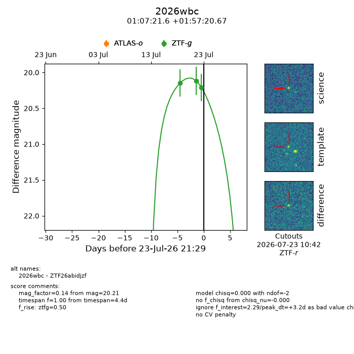
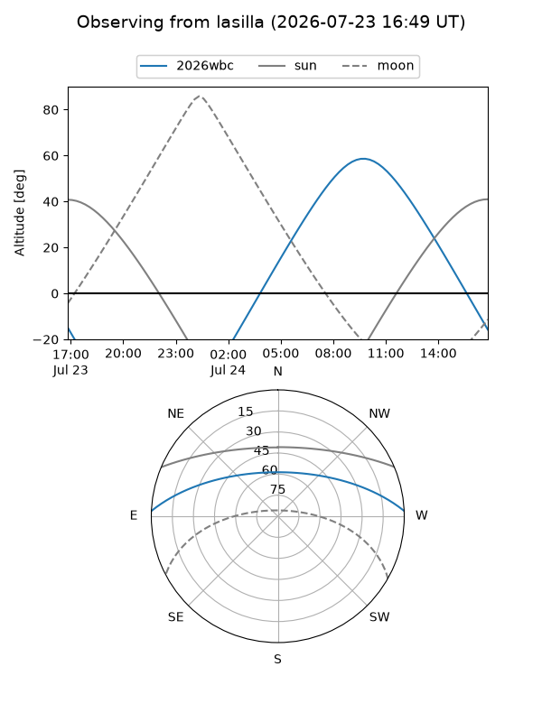
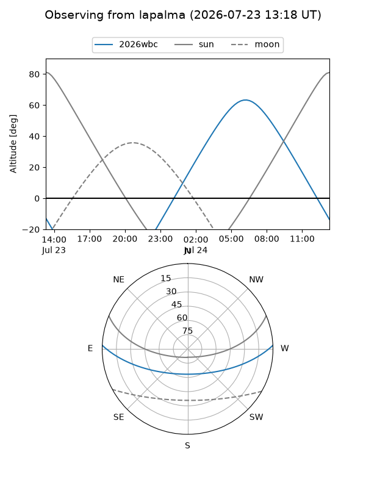
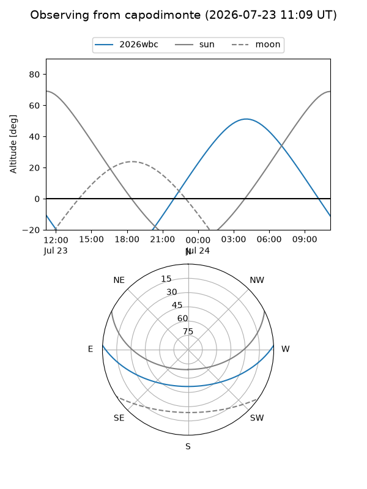
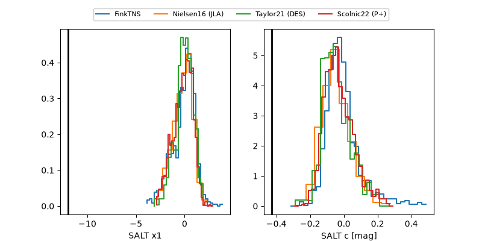

2026wbc
Target 2026wbc at 2026-07-23 21:30
Aliases and brokers:
FINK-ZTF: ztf.fink-portal.org/ZTF26abidjzf
Lasair-ZTF: lasair-ztf.lsst.ac.uk/objects/ZTF26abidjzf
ALeRCE-ZTF: alerce.online/object/ZTF26abidjzf
YSE-PZ: ziggy.ucolick.org/yse/transient_detail/2026wbc
TNS name: wis-tns.org/object/2026wbc
Direct TNS query: direct search
alt names
ZTF26abidjzf (ztf,fink_ztf)
2026wbc (tns,yse)
Coordinates:
equatorial (ra, dec) = 16.8401,+1.95574
equatorial (HMS+DMS) = 01:07:21.61,+01:57:20.67
galactic (l, b) = (131.0728,-60.66408)
Flags:
TNS type: nan
peak dt: +3.2
Photometry:
last ztfg=20.21
3 ztfg detections
Lightcurve

Visibility



Additional plots
